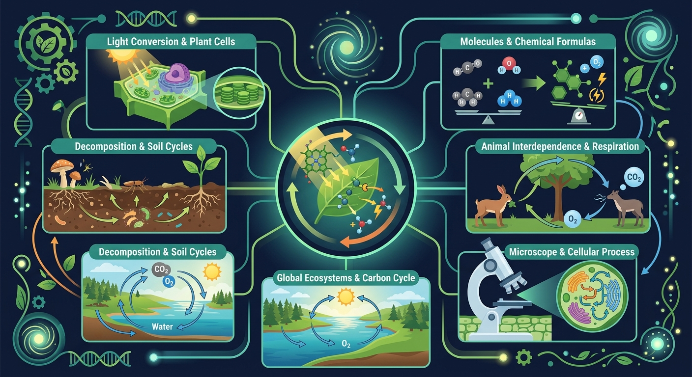
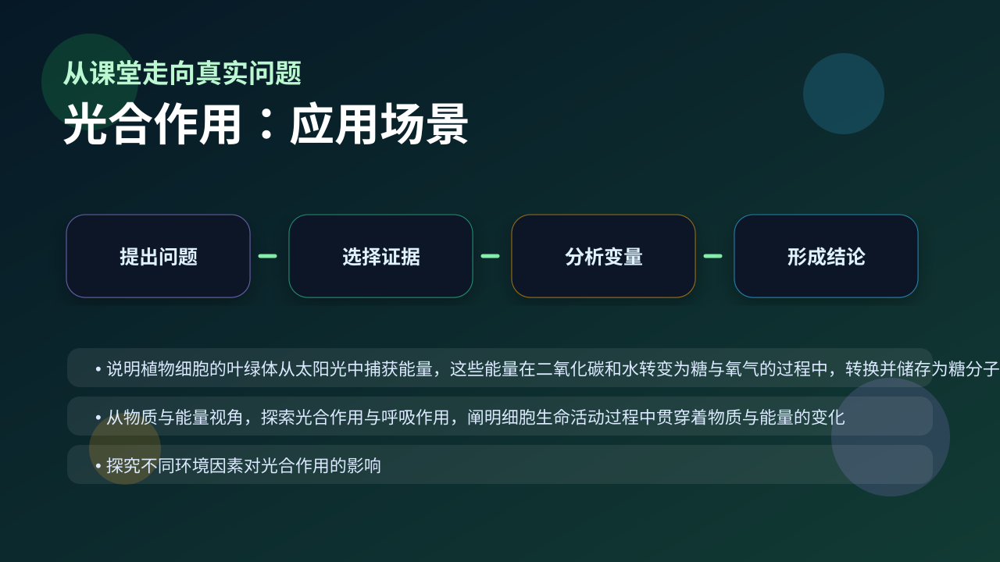

Gallery v1.0.0 · skill v7.14
物质和能量怎样在细胞里被转换，并最终支持生命活动？

已经知道：你已经会背一些生物学名词，也见过实验现象、曲线和图示。
但问题是：高中生物真正考查的是能否在新情境中说明变量、机制和证据，而不是复述一句定义。
所以学：本课把 光合作用 放进一个研究员式的真实任务：先看现象，再拆机制，最后用证据完成解释。
先选一个卡点。后面的例子、互动和 AI 学伴都会围绕它给你最小提示。
选择或输入后，本课会围绕你的问题展开。
植物突然移入黑暗环境时，最先受影响的物质是？
现象入口：同一植物在不同光照强度下，氧气释放量和二氧化碳吸收量明显不同。
机制解释：叶绿体吸收光能，把水和二氧化碳转化为有机物和氧气，光反应提供ATP和还原力，暗反应固定二氧化碳。
证据抓手：证据来自叶片遮光实验、碘液检测淀粉、氧气释放曲线和二氧化碳吸收量。
变量线索：光照强度、二氧化碳浓度、温度、水分和叶绿素含量。做题时先找变量，再判断机制，最后写证据。
观察叶片横切图指出叶绿体类囊体薄膜与基质区室
用同位素标记法追踪氧气中的氧原子来自水而非二氧化碳
分析突然停止光照时C3化合物积累而C5减少的动态变化
设计实验验证光合作用需要光强和二氧化碳双重条件
情境：如果增强光照后光合速率不再上升，限制因素可能已经转为二氧化碳或温度。
作答路径：第一句写可观察现象，第二句写本课机制，第三句写证据或变量关系。例如先说明“题干中哪个指标变化”，再说明“这个变化对应哪个结构或过程”，最后补上“为什么这个证据能支持结论”。
评分提醒：只有结论没有证据，通常只能得到识记分；能把 光合作用 和变量关系连起来，才是高中生物的解释性答案。
旋转 3D 分子模型，观察结构层级。请把结构特点和 光合作用 中的功能解释对应起来：结构不是装饰，而是功能的证据。
💡 操作提示：拖拽旋转模型，思考“形状、空间位置、结合位点”如何影响生命活动。
弱光下光合速率随光强近似线性上升；光强足够后受 CO₂ 等因素限制而饱和。
💡 探究任务：调 CO₂ 供应水平（最大速率），看饱和点如何变化，解释大棚种植为什么要补光又补气。
把光合作用说成“植物吸收阳光制造氧气”，忽略二氧化碳固定和有机物合成，是空泛答案。
只说“增加/减少”不够，要写清改变的是 光照强度、二氧化碳浓度、温度、水分和叶绿素含量 中的哪一个。
没有实验现象、曲线趋势或结构证据，答案就像猜测。
下列哪项直接由光反应提供？
视频用语音和动态画面回顾本课主线：问题情境 → 机制模型 → 证据判断 → 迁移应用。

解释温室增产、间作套种、森林碳汇，都要分析限制因素。
提交后会检查你的解释是否包含现象、机制和变量。
如果学生只说出概念名称，继续追问：题干里哪个证据最关键？这个证据对应分子、细胞、个体还是生态系统层级？如果改变 光照强度、二氧化碳浓度、温度、水分和叶绿素含量 中的一个条件，结果会怎样？这三问能把答案从背诵推进到科学解释。
用一句话说清 光合作用 的核心机制，必须包含“变量”和“结果”。
给一个实验或曲线，判断哪条证据支持你的解释。
换到健康、农业、生态或生物技术情境，设计一个可检验的问题。
下面哪一种答案最符合高中生物的科学解释要求？
学习小结：光合作用 的关键不是记住一个孤立词，而是能把生命现象放进层级、机制和证据的框架中解释。下次遇到陌生题，先问：变量是什么？机制在哪里？证据支持哪一步？
✅ 错因1：认为‘暗反应完全不需要光’——实际上暗反应依赖光反应提供的ATP/NADPH
✅ 误区2：混淆‘光合作用产物’与‘植物干重来源’——植物干重主要来自空气中的CO₂而非土壤
✅ 诊断3：将‘呼吸作用’简单理解为‘光合作用的逆反应’——二者场所、条件、功能均有本质区别
先独立作答，再点选项查看对错与错因。
在验证光合作用产生淀粉的实验中，对叶片进行酒精脱色的目的是
光合作用光反应阶段产生的物质是
夏季正午植物光合速率下降的主要原因是
光合作用中水的光解发生在叶绿体的____上，该过程同时产生____和电子
答案：类囊体膜、氧气
光反应场所是类囊体膜，水分解产生氧气、H+和电子
卡尔文循环中，CO₂的固定需要____酶催化，首先与____结合形成三碳化合物
答案：Rubisco、RuBP
暗反应关键酶是Rubisco，CO₂受体是五碳化合物RuBP
关于叶绿体结构与功能对应关系正确的是
使用红、蓝、绿滤光片覆盖培养的绿萝，测量单位时间气泡产生量
❓ 为什么植物晒太阳就能长高，我晒太阳只会变黑？
❓ 光合作用产生的氧气是全部来自水吗？
❓ 晚上没有光，植物是不是就不干活了？
学完这一课，这些问题你都能自信地回答。
口诀：光水氧，暗碳糖，ATP穿梭忙
类比：像快递站：光反应是打包能量包裹（ATP），暗反应是派送包裹合成糖